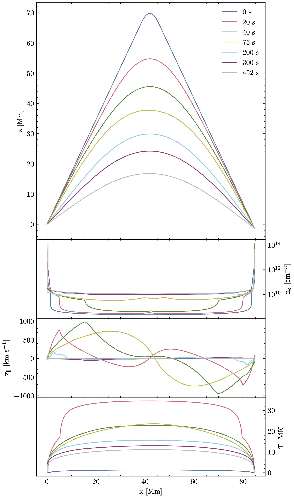
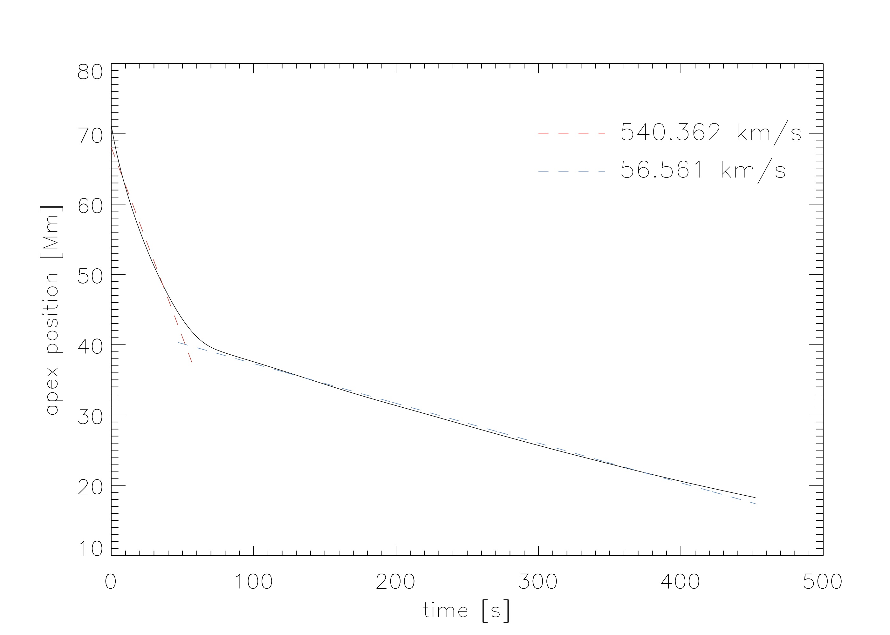
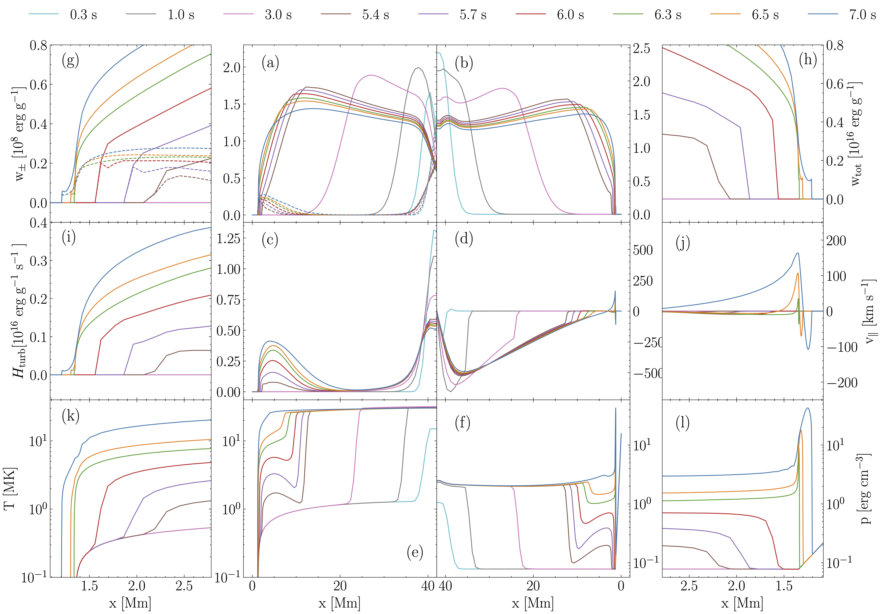
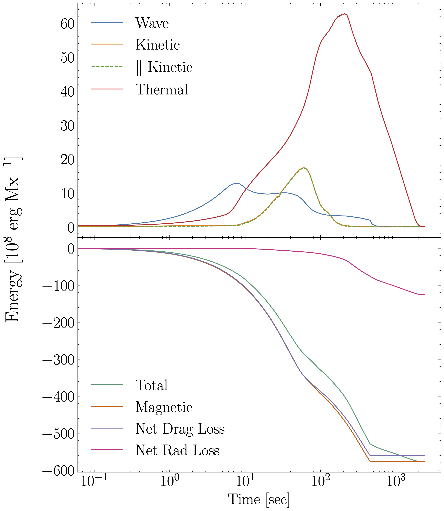
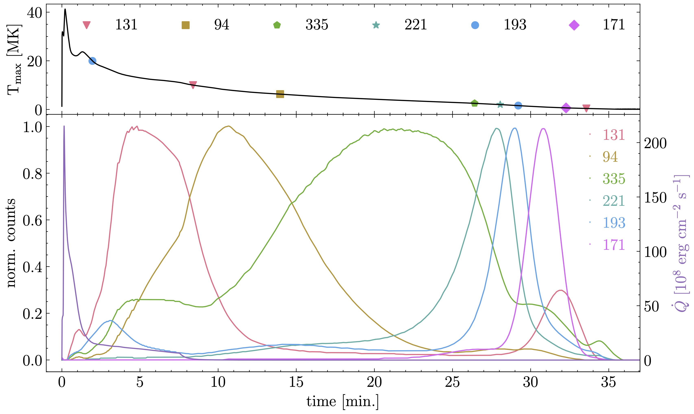
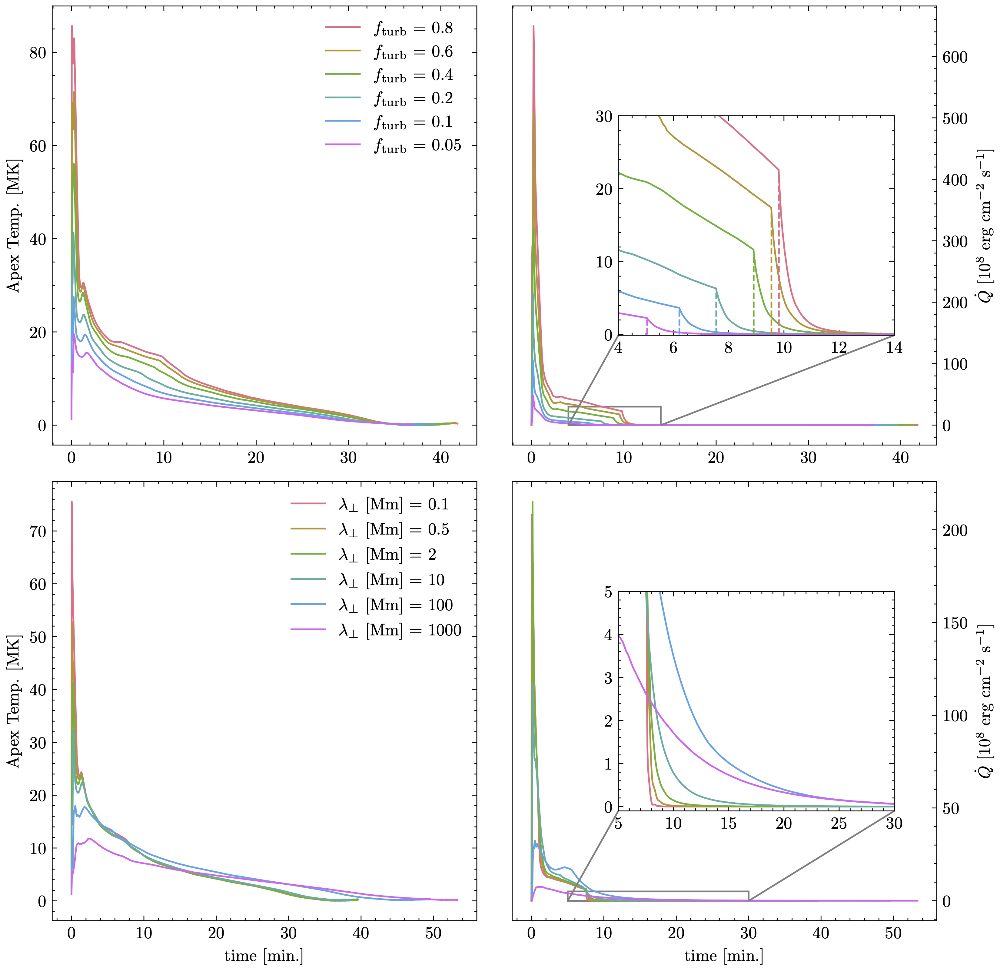
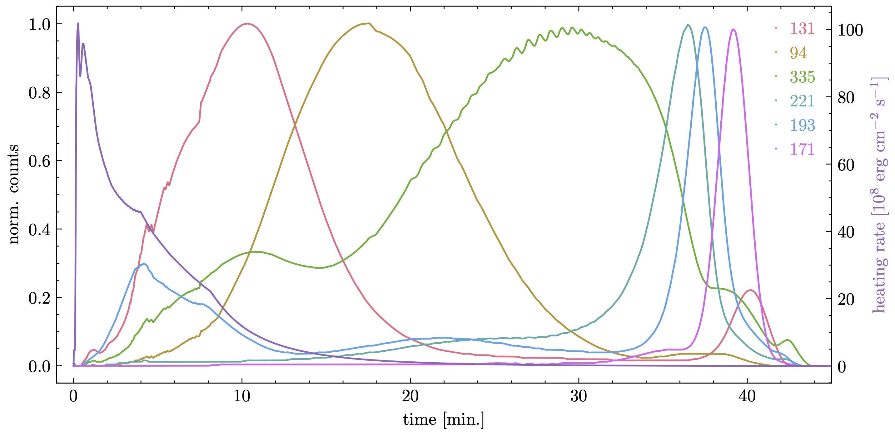

Model
A popular interpretation of supra-arcade downflows (SADs) is the retraction of post-reconnection flux tubes. These outflows, typically sub-Alfvénic on the order of hundreds of km/s, are slower than retraction driven by magnetic tension. Previous models have used Drag to explain these slow speeds (Unverferth & Longcope 2020), where the flux tube loses energy and momentum as it interacts with the surrounding plasma.
We model the retraction of a flux tube using the 1D PREFT numerical code (Longcope & Klimchuk 2015). A drag force is appended to the momentum equation to capture the interaction between the flux tube and the current sheet,
$$\textbf{f}_d = -D\, \rho\ |\textbf{v}_\perp|\ \textbf{v}_\perp.$$
Energy is removed from the retracting loop at a rate given by the drag power. We assume, however, that not all energy is lost to the background. Instead, we take a fraction of the power lost to drag to take the form of unresolved MHD turbulence on the tube itself,
$$P_d = \rho^{-1}\, \mathbf{v} \cdot \textbf{f}_d \leq 0,$$
in turn creating a source of turbulent Alfvén waves:
$$S_\pm = -\tfrac{1}{2}\,f_\mathrm{turb}\,P_d.$$
Our turbulent transport model gains inspiration from models of the solar wind (for example, see Zank et al. 2011 and references therein). Small-scale pertibations constituting the turbulence are modeled accouring to their aggregate energy densities, \( w_\pm \), which propagate as waves along the tube in the leftward (+) and rightward (-) directions:
$$\frac{dw_\pm}{dt} = \pm v_A \frac{\partial w_\pm}{\partial \ell} -\tfrac{1}{2} w_\pm \frac{\partial v_\parallel}{\partial \ell} \mp w_\pm \frac{\partial v_A}{\partial \ell} + S_\pm + NL_\pm.$$
Upon reaching the transition region, the waves undergo reflection due to high-density gradients, effectively trapping them in the corona (Zhou & Matthaeus 1990). Rather than computing this interaction directly, reflection is modeled through a reflection coefficient, \( \eta \), applied at the point where \( T = T_\mathrm{TR}= 0.5 \) MK.
Turbulent energy dissipates through the non-linear interaction between the counter-propagating Alfvén waves. The dissipation rate itself is modeled using a phenomenological, one-point closure model (Hossain et al. 1995),
$$NL_\pm = - \frac{w_\pm \sqrt{w_\mp}}{\lambda_\perp},$$
where \( \lambda_\perp \) is the characteristic correlation length between the two energy populations.
We finally assume that all energy lost from the turbulence is ultimately thermalized and appears as a heat source for the plasma,
$$\dot{Q} = \int \rho\, \Bigl(\, NL_+ + NL_- \Bigr)\,d\ell.$$
With this additional term, our model establishes a connection, albeit indirect, between the energy lost to drag and a heating rate that can be used to explain long-duration EUV emission seen during the gradual phase of flares.
A Simulation with Alfvén Wave Turbulence
An initial simulation was run with \( f_\mathrm{turb}=0.2 \) and \( \lambda_\perp \)=2 Mm. Starting with an apex height of \( z_0 = 71 \) Mm, the loop retracts over the course of 452 s to reach a final height of \( z_f = 18 \) Mm. This retraction, shown in Figure 1, is analogous to a loop retracting through a current sheet of \( \Delta z = z_0-z_f = 53 \) Mm.

Fig.1: Evolution of the flux tube during retraction.
An unexpected result of including drag was the evolution of the retraction, which was found to occur in two, nearly constant phases (Figure 2). A straightforward explanation for the deceleration is provided by evaporation, where the upward driving of chromospheric material increases the density in the corona, subsequently lowering the local Alfvén speed slowing the retraction. Our model thus offers an novel insight into the dynamics of retracting flux tubes, as the deceleration happens prior to reaching the post-flare arcade.

Fig.2: Position of loop apex over the retraction period along with linear fits to the two phases.
The initial dynamics of the flux tube is shown in Figure 3. Counter-propagating waves appear first at the loop top, where drag creates both waves together, and results in significant loop-top heating. This drives the temperature of the loop to a peak temperature of \( T_{peak} = 41 \) MK that rapidly drives thermal conduction fronts outward towards the footpoints. Once the reflection begins (t > 4.3 s), interaction between incident and reflected waves creates a second locus of heating near the footpoint.
A novel result of this simulation is the interaction between the thermal conduction fronts and the increase in temperature driven by the turbulent
heating at the reflection boundary. As the conduction fronts move leftward, they are impeded a
localized temperature increase in the transition region that grows over time. This localized heating from reflection creates a separate conduction front propagating in the leftward direction, as seen in the lower leftmost temperature panel. Remarkably, this conduction front appears to drive evaporation upon reaching the chromosphere, the beginnings of which are seen at t = 6.3 s in both parallel velocity and pressure.

Fig.3: Propagation of flux tube variables over the first seven seconds of the initial simulation.
The long-term evolution of the tube is energies plotted in Figure 4. The importance of wave energy in driving the initial flare evolution is readily seen when compared to the parallel kinetic energy. Here, the energy contained in turbulent Alfvén waves is found to be comparable to that contained in parallel plasma flows. Moreover, wave energy in the tube increases immediately upon the start of retraction, whereas kinetic energy increases 10 s later, after much of the initial dynamics have already taken place. The kinetic energy here is due to flows driven by evaporation — shown above to be a result of heating via turbulent dissipation at the reflection boundary in the transition region — and not from plasma deflected by rotational discontinuities traveling at supersonic speeds ( Guidoni & Longcope 2010 ). That is to say, the evolution of energies seen here supports the notion of turbulence acting as the primary mode of heating during flare energy release.

Fig.4: Evolution of energies within the tube.
In order to create a benchmark by which our model can be qualitatively compared to such observations, light curves corresponding to the six coronal EUV channels measured by AIA were synthesized using the results of our initial simulation. Shown in Figure 5, the lightcurves evolve in a typical fashion and peak successively according to their characteristic temperatures, decaying from 20 to 0.4 MK in 32 minutes. The total heat from turbulent dissipation is also shown Because the loop starts to cool at t = 206 s, turbulent heating after this time can be considered the gradual-phase heating supplemental to the impulsive energy release — analogous to the so-called slow-tail heating used in ( Qiu & Longcope 2016 ). Here, the gradual-phase heating component lasts much less than the duration of the synthesized emission, falling to nothing within 12 minutes after reaching its peak.

Fig.5: Synthetic light curves of AIA EUV channels 131, 94, 335, 211, 193 and 171Å produced using results from the initial simulation (top); Evolution of the apex temperature from the results of the same simulation. Markers denote the times when \( T_\mathrm{apex} \) crosses the formation of the ions characteristic to the six AIA EUV channels (Table 1 in Lemen et al. 2012).
Paramater Exploration
Seeking an explanation for extended gradual-phase heating, and longer duration of EUV emission, we revisited the initial parameters of our turbulent transport model. Six simulations were run with \( f_\mathrm{turb} \) = 0.05-0.8 to explore the response in turbulent energy to a change in drag loss conversation. In addition, because the efficacy of turbulent heating is determined by the singular parameter \( \lambda_\perp \), six simulations were run with correlation lengths ranging from \( \lambda_\perp \) = 0.1-1000 Mm. The results of the parameter exploration is shown in Figure 6. We found that (1) higher \( f_\mathrm{turb} \) lead to higher heating, and thus higher peak temperatures, but did not result in a longer apex-temperature duration; and (2) \( \lambda_\perp \) scaled inversely with \( \dot{Q} \), and smaller correlation lengths produce larger heating rates and subsequently larger apex temperatures. However, the two simulations with \( \lambda_\perp \geq 10 \) had markedly different behavior, with significant wave energy remaining beyond the end of retaction at t = 7.5 min.

Fig.6: Apex temperature evolution (left) and integrated heating rate \( \dot{Q} \) (right) for 12 simulations run with different values of drag power conversion \(f_\mathrm{turb} \) (top) and correlation length \( \lambda_\perp \) (bottom).
The duration of turbulent heating was found to be most dependent on the correlation length \( \lambda_\perp \). Only in those with \( \lambda_\perp \gtrsim \) 100 Mm does wave energy persist beyond the end of retraction, thereby prolonging the cooling of the flare. If waves are actually responsible for the long flare cooling times observed, non-linear wave dissipation would need to be characterized by such large correlation lengths.
Optimized Simulation
With a better understanding of the role wave energy can play in extending cooling times, a final simulation was run with \( f_\mathrm{turb} \) = 0.6 and \( \lambda_\perp \) = 100 Mm. Synthetic AIA emissions from the simulation results are shown in Figure 7. The duration of the heating rate in this case lasted 41 minutes and produced coronal emissions lasting for approximately 40 minutes, given the peak in 171Å. Additional simulations run with increased \( f_\mathrm{turb} \) and \( \lambda_\perp \), while not shown here, also failed to extend the duration of the emission past 40 minutes, further signifying the balance between strong flare dynamics and gradual turbulent dissipation. As such, the emission duration shown here represents the upper limit of our turbulent transport model.

Fig.7: Synthetic AIA EUV light curves from the results of the optimized simulation.